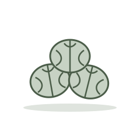
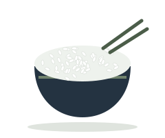
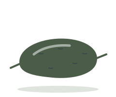
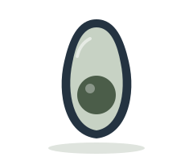
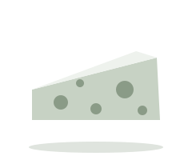
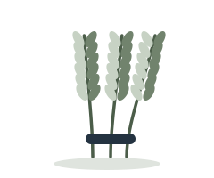
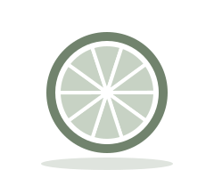
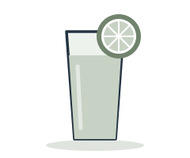

What each one does, where to find it, and what can happen when you’re low. General education based on Health Canada and the U.S. National Institutes of Health. Your own needs depend on your health, life stage and circumstances.
Macro
Protein
A building block of every cell, helping your body repair cells and make new ones.
What it does
Every cell in your body contains protein
Helps repair cells and make new ones
Important for growth, and during pregnancy
You can meet your needs with or without animal foods
Good to know
Try plant-based protein foods every day: they can bring more fibre and less saturated fat
You don’t need to eat large amounts to meet your needs
Where to find it
Eggs
Fish
Lower-fat yogurt
Lentils & beans

Nuts & seeds
Macro
Carbohydrates
Broken down into glucose, which your body uses for energy.
What it does
Sugars and starches become glucose, your body’s energy
Whole grains also bring fibre, vitamins and minerals
Fibre is a type of carbohydrate too
Good to know
Choose whole grains: refined grains lose fibre, vitamins and minerals
Severely restricting carbohydrates can cause ketosis, when the body turns to fat for energy
Where to find it
Whole grains

Oats & brown rice
Fruit

Potatoes & corn
Beans
Macro
Fats
Gives you energy and helps your body absorb vitamins A, D, E and K.
What it does
Gives you energy
Helps your body grow and develop
Helps absorb vitamins A, D, E and K
Good to know
Choosing mostly unsaturated fats instead of saturated and trans fats can help lower your risk of heart disease
Where to find it
Vegetable oils

Avocado
Nuts
Fatty fish
Seeds
Macro
Fibre
Helps keep you regular and full, and can help lower cholesterol.
What it does
Helps with bowel regularity
Can help lower blood cholesterol
Helps you feel full longer
Soluble fibre can help improve blood sugar control
Good to know
Women need about 25 g a day and men about 38 g
Most Canadians get only about half that
Where to find it
Oats & whole grains
Beans & lentils
Vegetables
Fruit
Nuts & seeds
Type of fat
Omega-3s
Part of the outer layer of every cell, especially in your eyes and brain.
What it does
Part of the membrane around every cell
Especially concentrated in the eyes and brain
Support your heart, lungs, immune system and hormones
Three main types: ALA from plants, EPA and DHA from fish
If you’re low
Rough, scaly skin
A red, swollen, itchy rash
Deficiency is very rare
Where to find it
Fatty fish
Walnuts
Flax & chia seeds
Canola & flaxseed oil
Fortified eggs
Micro
Iron
Carries oxygen from your lungs to every part of your body.
What it does
Makes haemoglobin, the protein in red blood cells that carries oxygen
Foods with vitamin C (citrus, peppers, tomatoes, broccoli) help you absorb iron from plants
If you’re low
Tiredness and lack of energy
Weakness
Trouble concentrating
More common with heavy periods or when not eating meat, poultry or seafood
Where to find it
Red meat & poultry
Lentils & beans
Spinach
Nuts & dried fruit
Fortified cereals
Micro
Calcium
Gives bones and teeth their structure, and helps muscles and nerves work.
What it does
Gives bones and teeth their structure and hardness
Helps muscles move and nerves carry messages
Helps blood vessels move blood and release hormones
If you’re low
Over time, weak and fragile bones (osteoporosis)
Higher risk of falls and fractures
After menopause, the body absorbs and keeps less calcium
Where to find it
Milk, yogurt & cheese
Fortified soy & almond beverages

Tofu
Canned salmon with bones
Kale & broccoli
Micro
Vitamin D
Helps your body absorb calcium, and supports muscles, nerves and immunity.
What it does
Helps absorb calcium for strong bones
Muscles need it to move, and nerves to carry messages
Helps your immune system fight bacteria and viruses
If you’re low
Bone pain
Muscle weakness
Soft, weak bones (osteomalacia)
Where to find it
Sunlight on bare skin
Fatty fish
Egg yolks
Fortified milk & plant beverages
Micro
Vitamin B12
Keeps your blood and nerve cells healthy.
What it does
Keeps blood and nerve cells healthy
Helps make DNA
Helps prevent a type of anaemia that causes tiredness and weakness
If you’re low
Tiredness and weakness
Numbness or tingling in hands and feet
Poor memory and low mood
More common in older adults, plant-based eaters, and with metformin or acid-reducing medicines
Where to find it
Fish & meat
Eggs
Dairy
Fortified cereals & nutritional yeast
Micro
Magnesium
Important for many processes in your body, including muscles, nerves and bones.
What it does
Helps regulate muscle and nerve function
Important for healthy bones
If you’re low
Loss of appetite, nausea and tiredness
Weakness
When severe: numbness, tingling and muscle cramps
Where to find it
Nuts & seeds
Leafy greens
Beans & lentils

Whole grains
Micro
Folate
Helps your body make DNA and new cells.
What it does
Needed to make DNA and other genetic material
Helps your cells divide
Especially important before and during pregnancy
If you’re low
Weakness and tiredness
Trouble concentrating, irritability and headaches
Heart palpitations and shortness of breath
Anyone who could become pregnant should get 400 mcg of folic acid a day
Where to find it
Dark leafy greens
Beans

Oranges
Asparagus & Brussels sprouts
Enriched bread & pasta
Micro
Potassium
Needed for almost everything your body does, from your heart to your muscles.
What it does
Helps your kidneys and heart work properly
Helps muscles contract and nerves send signals
If you’re low
Higher blood pressure
Calcium loss from bones and a higher risk of kidney stones
Very low levels: constipation, tiredness and muscle weakness
Many people get less than recommended
Where to find it
Bananas

Oranges & orange juice
Potatoes
Leafy greens
Beans & lentils
Dairy
Micro
Zinc
Helps your immune system fight infections and your wounds heal.
What it does
Helps your immune system fight bacteria and viruses
Helps make proteins and DNA
Helps wounds heal
Needed for taste and smell
If you’re low
Frequent infections
Hair loss
Loss of taste or smell
Slow wound healing
Plant-based eaters may need more, as beans and grains reduce absorption
Where to find it
Meat, fish & poultry
Fortified cereals
Beans
Nuts
Eggs & dairy
Keep exploring
Want support that fits your life?
See how nutrition counselling works and how we can work together.